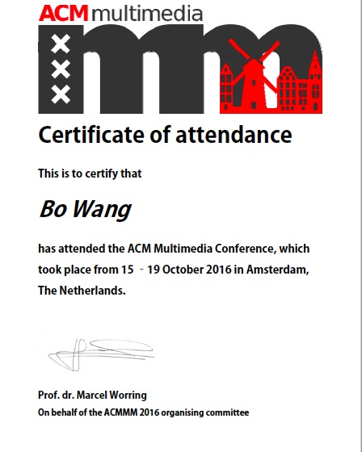
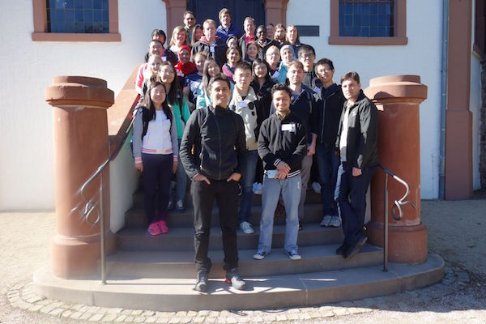

Currently finishing up my master thesis...
Workshop paper "Beyond Concept Detection: The Potential of User Intent for Image Retrieval" accepted at ACM MM 2017, MUSA, Mountain View, United States. paper code
Working note paper "TUDMMC@MediaEval Context of Experience task" accepted at MediaEval 2016, Hilversum, the Netherlands.
Volunteer at ACM MM 2016, Amsterdam, the Netherlands.

Attended ASIRF 2016, Autumn School for Information Retrieval and Information Foraging, Dagstuhl, Germany.
